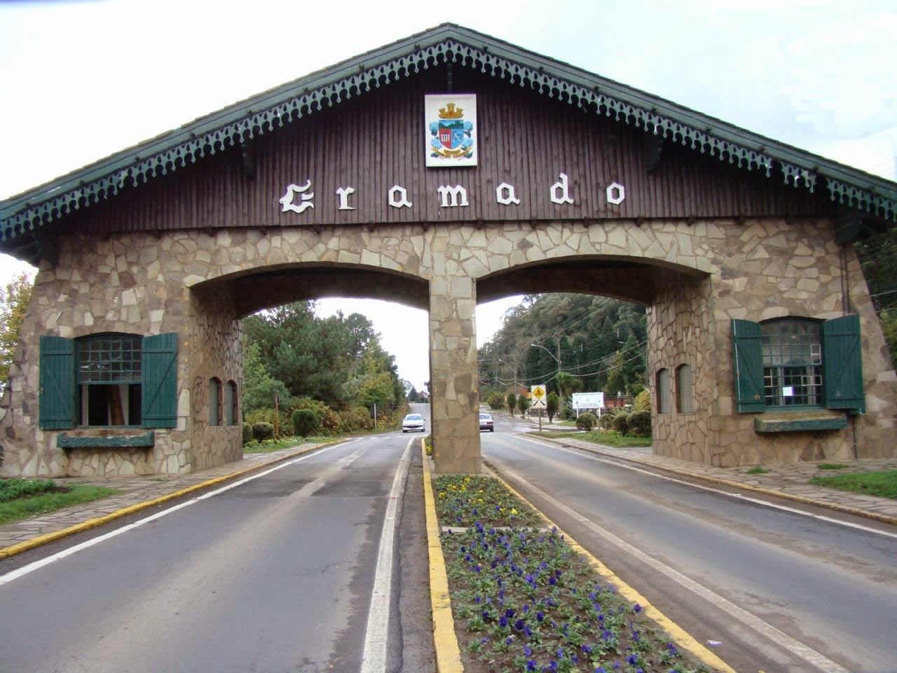
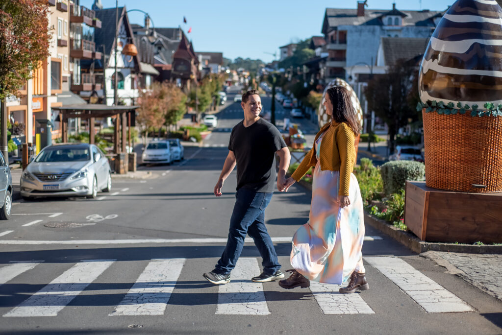
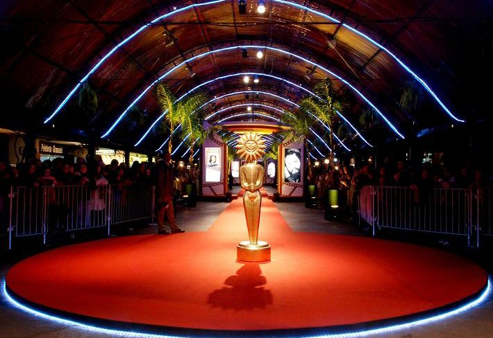
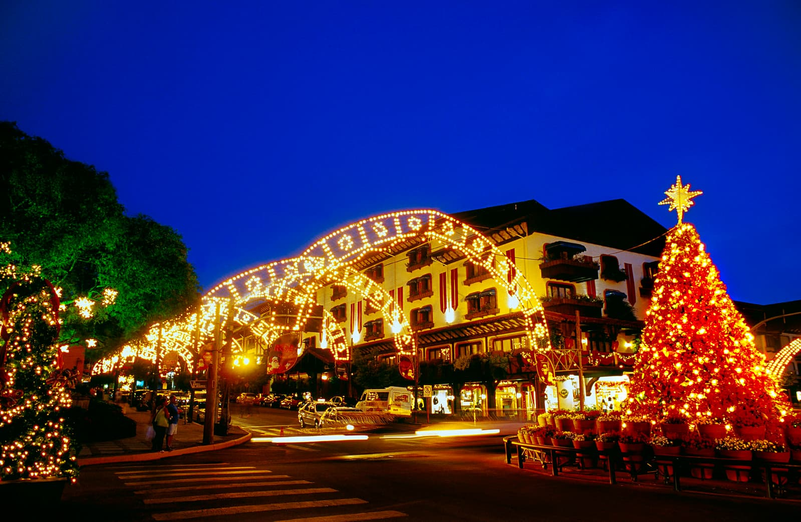
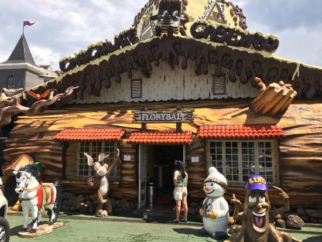

Gramado Tour
Criado para você, visitante, de Gramado
Curiosidades sobre Gramado
Não se sabe ao certo como o nome da cidade surgiu, mas a história mais famosa se dá graças aos tropeiros
da Serra Gaúcha. Durante anos, passavam pela cidade que tinha um enorme campo de mata verde e lá paravam
para descansar. Por causa da sua vista de um incrível gramado, a cidade acabou ganhando esse nome
inusitado.

Você sabia que é bem difícil encontrar semáforos pelas ruas de Gramado? Pois é! E ao contrário do que
muitos podem pensar, os motoristas respeitam perfeitamente as leis de trânsito e param nas faixas de
pedestres. Ah, e a melhor parte é que não existe trânsito por lá, já que é tudo bem organizado e
tranquilo.

Criado em 1973, o Festival do Cinema Brasileiro e Latino de Gramado é considerado um dos eventos mais
tradicionais de cinema no Brasil. Realizado durante todo o mês de agosto no Palácio dos Festivais, o
evento conta com um tapete vermelho na Rua Coberta durante sua cerimônia de abertura, onde os artistas e
diretores marcam presença. O evento é aberto ao público e possui opções para todas as pessoas, que podem
assistir a curtas e longas metragens nacionais e internacionais.

Em Gramado, o clima natalino dura ainda mais tempo. De outubro a janeiro, todas as lojinhas, casas, ruas
e árvores ganham uma decoração especial e muito iluminada. Além de deixar a cidade linda, o Natal Luz
conta com uma programação completa para a família toda, cheia de eventos, desfiles, musicais e
apresentações de teatro espalhadas pela cidade.

A mais nova dona do título de Capital Nacional do Chocolate Artesanal é a cidade de Gramado. Com 19
fábricas diferentes, por lá são elaborados os chocolates dos mais diversos tipos, qualidades e preços -
por isso, com certeza algum vai te agradar. Os chocolates são vendidos em milhares de lojas pela cidade,
e a maioria também oferece uma visitação gratuita às fábricas para que o visitante possa conferir, ao
vivo, sua produção.

Impossível ir para Gramado e não dar uma passada na famosa Rua Torta para tirar umas fotos! Bem
semelhante à Lombard Street, em São Francisco, na Califórnia, a Rua Emílio Sorgetz fica no bairro
Planalto na cidade, pertinho do centro, e é bem diferente das outras ruas por ter uma ladeira cheia de
curvas - e com lindos jardins, diga-se de passagem!